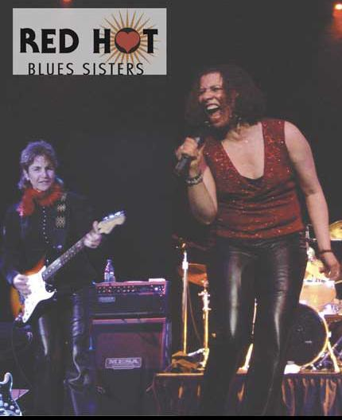

Peace to the muze!
So this is the big push. Got to say some thing cause everybody says were ready We've Got It.
What we do has been done before, but it is in the difference that we shall prevail(won't tell you twice)©2007 Sims Wilson.
We have been persistent, we have been careful, we have gone broke and NOW its time.
I seems everywhere we play; they ask us back, and we are greatful and graciously accept.
But NOW it is time to say thanks!
Thank you so much! No, we mean thank you! All of this has got to be said.
before we can say ...Oh hey this is our cool website and check us out. we must say thanks.
so many people have just scooped us up
fitted us with wings and flew us to the highest points,
without provocation or solicitation. they just came and saw
and simply love us and we thank you.
after all the applause ovations and down front hooplah
we say you have affirmed our highest dreams are tangible.
our scene of achievement is fortified.
our passion to move forward is encouraged.
we are about to be beyond our wildest dreams. Suze
|
|

|
| Hot times with the The Red Hot Blues Sisters! |
|
Awards!
WB Society
2007 Best Female Blues Vocalist Nominee
2006 Best Band Nominees
GB
Track of the Day on 4Jun2005 in Blues
Track of the Day on 14Jul2005 in R&B
Track Of The Week on 13Jun2005 in Blues
Track Of The Week on 25Jul2005 in R&B
#25 Best Female Vocals in Blues, all-time
#5 Best Drums in Blues, all-time
#10 Best Programming in Blues, all-time
#15 Best Melody in Blues, all-time
#5 Best Beat in Blues, all-time
Best Female Vocals in Blues, week of 13Jun2005
Best Female Vocals in Blues, week of 20Jun2005
Best Female Vocals in Blues, week of 27Jun2005
Best Female Vocals in Blues, week of 4Jul2005
Best Female Vocals in Blues, week of 11Jul2005
Best Female Vocals in Blues, week of 18Jul2005
Best Female Vocals in Blues, week of 8Aug2005
Best Drums in Blues, week of 11Jul2005
Best Drums in Blues, week of 18Jul2005
Best Programming in Blues, week of 20Jun2005
Best Production in Blues, week of 13Jun2005
Best Production in Blues, week of 4Jul2005
Best Production in Blues, week of 11Jul2005
Best Lyrics in Blues, week of 20Jun2005
Best Melody in Blues, week of 11Jul2005
Best Beat in Blues, week of 13Jun2005
Best Beat in Blues, week of 20Jun2005
Best Beat in Blues, week of 18Jul2005
Most Original in Blues, week of 11Jul2005
Rocking Track in Blues, week of 11Jul2005
|